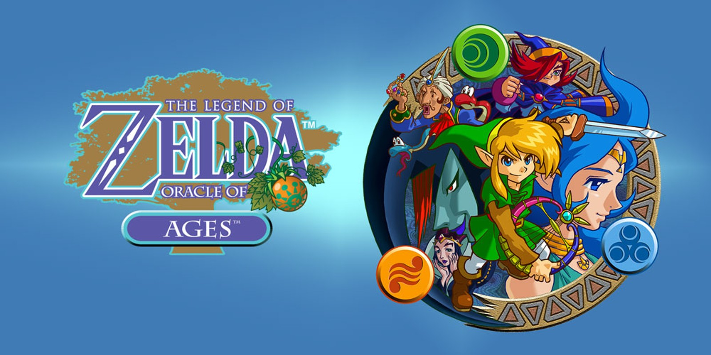
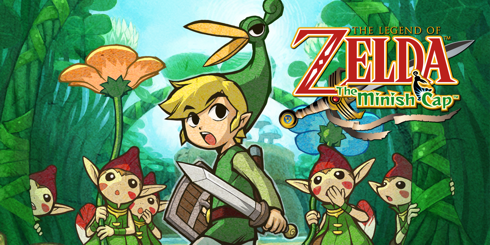

The Legend of Zelda (1986)
Synopsis : Dans ce tout premier jeu de la série "The Legend of Zelda"Link doit sauver la princesse Zelda,
enlevée par le maléfique Ganon. Avant sa capture, Zelda a brisé la Triforce de la Sagesse, ce qui a permis à Ganon de s'emparer
de la Triforce de la Force. Le sorcier maléfique cherche maintenant à réunir les trois pièces de la Triforce, la Triforce de la Force,
la Triforce de la Sagesse et la Triforce du Courage pour conquérir le royaume d'Hyrule. Pour empêcher Ganon de prendre le contrôle d'Hyrule,
Link doit collecter les fragments de la Triforce de la Sagesse cachés dans les huit donjons du royaume. Chaque donjon est rempli de monstres,
d'énigmes et de trésors qui aideront Link dans sa quête. Une fois tous les fragments réunis, Link doit se rendre dans le donjon de Ganon pour affronter
le maléfique sorcier. En obtenant la Triforce du Courage, Link réussit à sauver Zelda et à restaurer la paix dans Hyrule.
Source : The Legend of Zelda

Zelda II: The Adventure of Link (1987)
Synopsis : Link doit sauver la princesse Zelda, plongée dans un profond sommeil à cause d'un sort maléfique. Pour briser ce sort,
Link doit trouver et placer la Triforce du Courage dans le Grand Palais. Cependant, cette quête est semée d'embûches, car Link doit parcourir Hyrule,
collecter des gemmes magiques et améliorer ses capacités. Au cours de son voyage, Link rencontre des ennemis puissants, comme les Gorons, les ReDead,
et même Dark Link. Il doit résoudre des énigmes et explorer des donjons pour obtenir de nouvelles magies et renforcer ses compétences. En outre, Link
doit obtenir des clés pour accéder à de nouvelles zones et améliorer ses pouvoirs. Après de nombreuses épreuves, Link se rend au Grand Palais pour affronter
l'ennemi final et sauver la princesse Zelda.
Source : The Legend of Zelda
The Legend of Zelda: A Link to the Past (1991)
Synopsis : Link doit sauver la princesse Zelda, emprisonnée par le méchant sorcier Agahnim, qui cherche à ouvrir la porte du monde des ténèbres et à conquérir Hyrule.
Pour l'arrêter, Link doit traverser les quatre donjons du monde de la lumière et des donjons du monde des ténèbres pour récupérer les cristaux. En chemin, Link explore des temples,
rencontre de nouveaux alliés comme le Vieil Homme et l'Ancien, et utilise de puissants objets magiques tels que le boomerang, l'arc, ou encore le flacon pour soigner ses blessures.
Grâce aux pouvoirs obtenus, Link se rend au château de Ganon pour affronter Ganon, l'ennemi final, et restaurer la paix dans Hyrule.
Source : The Legend of Zelda
The Legend of Zelda: Link's Awakening (1993)
Synopsis : Link se retrouve sur l'île de Cocolint, après un naufrage. Là, il découvre que la déesse Wind Fish est endormie dans l'œuf géant sur le sommet du mont Cocolint.
Afin de réveiller la déesse et de quitter l'île, Link doit collecter les instruments des sirènes, cachés dans différents donjons. Au fil de son aventure, Link rencontre de nombreux personnages,
comme le vieil homme de la maison de la sorcière, et affronte des ennemis de plus en plus puissants. Chaque instrument des sirènes récupéré permet à Link de progresser et de se rapprocher de l'ultime objectif.
À la fin de son périple, Link doit faire face à la réalité de l'île de Cocolint, découvrir le secret de la déesse et du Wind Fish, et prendre une décision cruciale concernant le destin de l'île.
Source : The Legend of Zelda

The Legend of Zelda: Ocarina of Time (1998)
Synopsis : Link, un jeune garçon de la forêt Kokiri, est choisi par l’Arbre Mojo pour sauver le royaume d’Hyrule d’un mal ancien. Accompagné de sa fée guide Navi,
il part en quête des Pierres Ancestrales requises pour accéder au Temple du Temps. Après avoir retiré l’Épée de Légende, Link se retrouve projeté sept ans dans le futur,
où le sorcier maléfique Ganondorf a pris le contrôle du royaume.Devenu adulte, Link doit réveiller les Six Sages afin de sceller Ganondorf et empêcher la destruction d’Hyrule.
Avec l’aide de Sheik, il traverse de nombreux donjons, résout des énigmes et combat des créatures pour enfin affronter Ganondorf dans une bataille épique. Grâce à son courage,
Link parvient à restaurer la paix dans le royaume et empêcher la menace de Ganondorf.
Source : The Legend of Zelda

The Legend of Zelda: Majora's Mask (2000)
Synopsis : Link, accompagné de sa jument Epona, part à la recherche de sa fée guide Navi, qui a disparu après les événements de Ocarina of Time.
Sur son chemin, il croise un mystérieux personnage, Skull Kid, qui porte le masque maléfique de Majora et est accompagné de deux fées, dont Tatl,
qui deviendra plus tard la partenaire de Link. Ce skull kid parvient à lui voler Epona et son ocarina du temps. Lorsque Link tente de récupérer ce qui lui a été volé,
Skull Kid utilise les pouvoirs du masque pour transformer Link en enfant Mojo.Désormais dans cette nouvelle forme (temporaire), Link doit naviguer à travers Termina,
un monde étrange où la Lune menace de s’écraser dans trois jours. Avec l’aide de Tatl, Link utilise l'Ocarina du Temps pour manipuler le temps et revivre sans cesse
les trois derniers jours. Il devra résoudre les problèmes des habitants de Termina, récupérer des masques magiques pour acquérir de nouveaux pouvoirs et empêcher la catastrophe.
Source : The Legend of Zelda
The Legend of Zelda: Oracle of Seasons (2001)
Synopsis : Link est transporté dans le royaume de Holodrum, où une sorcière nommée Onox vole le Sceptre des Saisons, perturbant l’équilibre de la nature.
La princesse Din est enlevée, et c’est à Link de la sauver. En utilisant la Roue du Temps, Link voyage à travers les saisons, permettant à la terre de passer du printemps à l’hiver
et inversement pour résoudre des énigmes et combattre des ennemis. Il doit également récupérer les pierres élémentaires et affronter Onox dans un combat final pour restaurer l’ordre naturel et sauver Din.
Avec l’aide de la Déesse des Saisons, Link parvient à rétablir l’équilibre des saisons et à sauver Holodrum de la destruction.
Source : The Legend of Zelda

The Legend of Zelda: Oracle of Ages (2001)
Synopsis : Dans The Legend of Zelda: Oracle of Ages, Link se rend dans le royaume de Labrynna, où il découvre que Nayru, la déesse de la sagesse, a été enlevée par Veran,
la sorcière des ténèbres. Veran prend possession du corps de Nayru et manipule le temps pour semer le chaos à travers Labrynna. Pour sauver Nayru et restaurer l'ordre, Link doit
collecter les médaillons du temps dans divers donjons et voyager entre le passé et le présent grâce à l'harpe du temps. Avec l'aide de la fée de l'ombre Ralph et de l'esprit du temps,
Link doit résoudre des énigmes et affronter Veran pour libérer la déesse et ramener la paix dans le royaume. Le destin de Labrynna dépend de la maîtrise du temps et des pouvoirs de l'harpe du temps.
Source : The Legend of Zelda
The Legend of Zelda: Four Swords (2002)
Synopsis : Link doit affronter un mal ancien lorsqu’un démon nommé Vaati libère une puissance sombre en se servant de la "Four Sword". Pour sauver le royaume, Link se divise
en quatre versions de lui-même grâce à la magie de la Fourchette, formant ainsi une équipe de quatre héros. Chaque Link doit travailler en coopération pour résoudre des énigmes,
vaincre des ennemis et restaurer l’ordre. En utilisant les pouvoirs uniques de chaque Link, ils affrontent Vaati et rétablissent la paix dans le royaume.
Source : The Legend of Zelda
The Legend of Zelda: The Wind Waker (2003)
Synopsis : Link, un jeune garçon vivant sur une île lointaine, se lance dans une aventure épique pour sauver sa sœur Aryll, enlevée par un oiseau géant.
Il découvre que l’île où il vit fait partie d’un vaste archipel, et qu’un mal ancien, Ganon, est sur le point de revenir pour plonger le monde dans les ténèbres.
Avec l’aide de la Barque du Vent, Link navigue à travers l’océan pour retrouver les Trois Pierres Spirituelles, affronter des ennemis et découvrir la vérité sur
l’ancienne Terre d'Hyrule, engloutie sous les eaux. Link devra réveiller le pouvoir de l’Épée de Légende et vaincre Ganon pour restaurer la paix dans ce monde aquatique.
Source : The Legend of Zelda

The Legend of Zelda: The Minish Cap (2004)
Synopsis : Link, un jeune garçon de Hyrule, reçoit un chapeau magique nommé Ezlo, qui se révèle être un ancien sage sous forme de chapeau, après que le
sorcier maléfique Vaati ait transformé la princesse Zelda en pierre. Vaati cherche à libérer un ancien pouvoir caché dans la Tour des Cieux, et pour l'arrêter,
Link doit voyager à travers Hyrule, rencontrer le peuple magique des Minish et rétrécir à leur taille grâce au pouvoir d'Ezlo. Au cours de son aventure,
Link doit retrouver les Quatre Cristaux et restaurer l'Épée de Légende. Avec l'aide de Ezlo, Link résout des énigmes, combat des ennemis et explore des donjons
pour empêcher Vaati de plonger le royaume dans l'obscurité et sauver Zelda.
Source : The Legend of Zelda

The Legend of Zelda: Four Swords Adventures (2005)
Synopsis : Link est convoqué par la princesse Zelda pour sauver Hyrule d'une nouvelle menace. Après que le maléfique Vaati ait libéré son alter ego, Dark Link,
et qu'ils aient volé l'Épée des Quatre, une épée magique capable de diviser Link en plusieurs copies, Link doit s'unir avec ses doubles pour stopper Vaati et ses sbires.
Dans cette aventure, Link se divise en quatre versions distinctes grâce à l'Épée des Quatre, permettant à chaque Link d'explorer différentes zones de Hyrule, de résoudre des énigmes
en coopération et de combattre des ennemis ensemble. Les quatre Link doivent se rassembler pour vaincre Vaati, stopper ses plans maléfiques et restaurer la paix dans le royaume.
Source : The Legend of Zelda

The Legend of Zelda: Twilight Princess (2006)
Synopsis : Link, un jeune fermier du village de Toal, est entraîné dans une quête épique lorsqu’un pouvoir maléfique plonge le royaume d’Hyrule dans un crépuscule permanent.
Lorsqu’il est capturé par les créatures des ténèbres, Link est transformé en loup et rencontre Midona, une mystérieuse créature venant du royaume du Crépuscule. Avec l’aide de Midona,
Link doit restaurer la lumière en retrouvant les fragments de lumière dispersés dans les provinces d’Hyrule et en affrontant les créatures de l’ombre. Armé de l’Épée de Légende et équipé
d’artefacts puissants comme l’arc du héros, Link explore des temples et résout des énigmes pour défaire les forces du mal. Finalement, il affronte le roi du Crépuscule, Xanto, avant de se mesurer à Ganondorf,
qui cherche à dominer Hyrule grâce à la Triforce du Pouvoir. Avec Midona à ses côtés, Link rétablit la paix entre le royaume d’Hyrule et celui du Crépuscule.
Source : The Legend of Zelda
The Legend of Zelda: Phantom Hourglass (2007)
Synopsis : Link et Tetra, accompagnés de leur équipage de pirates, explorent une mer mystérieuse lorsqu’ils découvrent un navire fantôme. Lorsqu’ils tentent de l’aborder, Tetra est capturée,
et Link tombe à la mer. Il se réveille sur une île inconnue, où il rencontre Ciela, une fée amnésique, et un marin nommé Linebeck. Pour sauver Tetra, Link doit explorer l’Océan du Roi à bord du navire de Linebeck,
naviguant entre diverses îles pour récupérer les sables du temps, une substance magique permettant de repousser le maléfice du Temple du Roi des Mers. Ce temple abrite des énigmes complexes et est protégé par des spectres,
des ennemis invincibles. Armé de l’épée spectrale, Link affronte le maléfique Bellum, une entité responsable de la disparition des habitants du royaume. Avec l’aide de Ciela et du Phantom Hourglass, il sauve Tetra, libère l’océan
de la menace de Bellum et ramène la paix dans le monde.
Source : The Legend of Zelda
The Legend of Zelda: Spirits Tracks (2009)
Synopsis : Link est un apprenti conducteur de train dans le royaume d’Hyrule. Lorsqu’il est invité au château pour recevoir son diplôme, il découvre que les Voies sacrées, des rails mystiques reliant les différentes régions du royaume,
disparaissent mystérieusement. Pire encore, le roi démon Mallard menace de se libérer grâce à un complot orchestré par son serviteur, le chancelier Cole. Lors d'une attaque, l'esprit de la princesse Zelda est séparé de son corps, mais elle devient
une alliée essentielle dans cette aventure. Sous sa forme spectrale, Zelda peut posséder des spectres, des armures vivantes, pour aider Link à explorer les donjons et à résoudre des énigmes. Ensemble, ils parcourent les régions d’Hyrule à bord de
la Locomotive des Dieux pour restaurer les Voies sacrées et empêcher le retour de Mallard. Armé de la Flûte de la Terre et de l’Épée de Légende, Link doit affronter des ennemis redoutables, restaurer l’équilibre du royaume, et réunir Zelda avec son corps.
Source : The Legend of Zelda

The Legend of Zelda: Skyward Sword (2011)
Synopsis : Link vit sur l'île céleste de Célestbourg, un havre flottant au-dessus des nuages. Lors de la Cérémonie de l’Oiseau Écarlate, sa meilleure amie, Zelda, est emportée par une mystérieuse tornade vers le monde de la surface, un territoire oublié sous les nuages.
Guidé par Fay, l’esprit de l’Épée Divine, Link descend sur la surface pour sauver Zelda et découvrir son destin en tant que héros. Au cours de son aventure, Link explore des régions comme la forêt de Firone, le désert de Lanelle et le volcan d’Ordinn, où il résout des énigmes et affronte des créatures redoutables.
Il découvre que Ghirahim, un démon au service du roi démon Démise, cherche à ressusciter son maître en capturant Zelda, la réincarnation de la Déesse Hylia. Armé de l’Épée Divine, que ses exploits transforment en la Master Sword, Link doit affronter Ghirahim et Démise pour empêcher le mal de dominer et sceller la
réincarnation éternelle du mal à travers les âges.
Source : The Legend of Zelda

The Legend of Zelda: A Link Between Worlds (2013)
Synopsis : Link, un jeune apprenti forgeron du royaume d’Hyrule, est entraîné dans une nouvelle aventure lorsque le sorcier maléfique Yuga apparaît. Ce dernier transforme des sages en peintures et menace de ressusciter Ganon pour plonger le monde dans les ténèbres. Après avoir été vaincu par Yuga,
Link reçoit l’aide de Ravio, un mystérieux marchand, et découvre un pouvoir unique : celui de se transformer en peinture murale grâce à un bracelet magique. Ce pouvoir permet à Link de voyager entre Hyrule et son monde parallèle, Lorule, un royaume dévasté dirigé par la princesse Hilda. Pour sauver les deux mondes,
Link doit récupérer les sept gemmes de la sagesse en explorant des donjons remplis d’énigmes et de dangers. Armé de l’Épée de Légende, et avec l’aide de la Triforce du Courage, Link affronte Yuga-Ganon dans un ultime combat pour restaurer l’équilibre entre Hyrule et Lorule, révélant un destin inattendu pour la princesse Hilda.
Source : The Legend of Zelda
The Legend of Zelda: Hyrule Warriors (2014)
Synopsis : Dans Hyrule Warriors, le royaume d’Hyrule est plongé dans le chaos lorsque la sorcière maléfique Cya, corrompue par sa soif de pouvoir, libère des hordes de monstres pour semer la destruction. Cya cherche à rassembler les fragments de la Triforce pour ouvrir des portails vers d’autres époques et ressusciter Ganon.
Link, un jeune chevalier en formation, s’allie à Zelda, Impa, et d’autres héros emblématiques pour protéger le royaume. Guidé par les Lumières de l’Âme, l’équipe traverse les dimensions d’Ocarina of Time, Twilight Princess, et Skyward Sword, recrutant des alliés comme Midona, Darunia, et Fi. Ensemble, ils affrontent les forces de Cya et
ses alliés, comme Volga et Wizzro, tout en récupérant les fragments de la Triforce pour empêcher la résurrection de Ganon. Dans un ultime combat, les héros unissent leurs forces pour sceller Ganon et restaurer l’équilibre entre les mondes, protégeant le royaume d’Hyrule d’une destruction imminente.
Source : The Legend of Zelda
The Legend of Zelda: Tri Force Heroes (2015)
Synopsis : Link se rend dans le royaume de Textilia, célèbre pour sa mode, où une terrible malédiction frappe la princesse Couturière. Transformée en une silhouette informe et condamnée à porter une tenue hideuse, elle perd toute sa grâce royale. Le roi fait alors appel à un héros légendaire pour briser le sort.
Link, accompagné de deux autres héros (incarnés par des joueurs ou des doubles contrôlés par lui), doit affronter des épreuves périlleuses dans des régions variées pour récupérer des matériaux et coudre des tenues magiques conférant des pouvoirs spéciaux. Grâce à leur collaboration, les trois héros progressent dans des donjons
remplis de puzzles et de combats, afin de percer le mystère de la malédiction et affronter la sinistre Dame Maudite. En combinant leurs forces, les héros parviennent à sauver la princesse et à ramener la paix et la beauté au royaume de Textilia.
Source : The Legend of Zelda

The Legend of Zelda: Breath of the Wild (2017)
Synopsis : Link se réveille d’un long sommeil de 100 ans dans le Sanctuaire de la Renaissance, amnésique et seul. Guidé par une mystérieuse voix, il découvre que le royaume d’Hyrule est en ruines, ravagé par le Fléau Ganon, une entité maléfique qui menace de détruire tout ce qui reste. La princesse Zelda, dernière espoir d’Hyrule,
retient Ganon prisonnier dans le château depuis un siècle, mais ses forces s’amenuisent. Pour sauver le royaume, Link doit retrouver ses souvenirs perdus, explorer un vaste monde ouvert rempli de mystères et d’énigmes, et libérer les Créatures Divines, d’immenses machines contrôlées par les esprits des anciens champions d’Hyrule. Il récupère
l’Épée de Légende, affronte des ennemis redoutables et résout des quêtes pour rassembler les forces nécessaires. Avec le soutien des habitants d’Hyrule, Link doit vaincre le Fléau Ganon, restaurer la paix et libérer la princesse Zelda de son fardeau éternel.
Source : The Legend of Zelda

The Legend of Zelda: Cadence of Hyrule (2019)
Synopsis : Cadence of Hyrule est un spin-off mêlant les mécaniques rythmiques de Crypt of the NecroDancer à l’univers emblématique de The Legend of Zelda. Dans ce jeu, Cadence, l’héroïne de Crypt of the NecroDancer, se retrouve mystérieusement transportée dans le royaume d’Hyrule. Là, elle s’allie à Link et Zelda pour affronter Octavio,
un musicien maléfique qui a ensorcelé le roi d’Hyrule et répandu le chaos. Le jeu combine exploration, énigmes et combats rythmés : chaque mouvement et action doivent suivre la musique pour maximiser les attaques et esquiver les ennemis. Les joueurs peuvent incarner Link, Zelda, ou Cadence, chacun disposant de capacités uniques, pour récupérer des objets
emblématiques comme le Boomerang ou l’Épée de Légende, et explorer un Hyrule généré de manière procédurale. Avec une bande-son dynamique et des mécaniques de jeu uniques, Cadence of Hyrule offre une aventure musicale où le rythme est la clé pour restaurer la paix dans le royaume.
Source : The Legend of Zelda
The Legend of Zelda: Hyrule Warriors: Age of Calamity (2020)
Synopsis : Hyrule Warriors: Age of Calamity plonge les joueurs dans un passé lointain, cent ans avant les événements de Breath of the Wild. Le royaume d’Hyrule est menacé par le Fléau Ganon, une entité maléfique ressuscitée, qui déchaîne la guerre avec ses Gardiens et ses Bêtes Divines. Link, la princesse Zelda, Impa, et d'autres alliés emblématiques
s'unissent pour défendre leur terre. L’histoire commence avec un étrange phénomène : une mystérieuse potion de la sorcière permet à Mipha, Daruk, Revali et Urbosa, les champions des Créatures Divines, de revenir dans le temps, aidant Link et Zelda à lutter contre le Fléau. Ensemble, ils combattent des armées de Gardiens et des Soldats Bokoblin dans de vastes
champs de bataille à la manière d'un jeu de type musou. Dans une lutte désespérée pour sauver le royaume, les héros doivent affronter les forces de Ganon, libérer les Créatures Divines, et empêcher la destruction imminente d'Hyrule. Cependant, les événements qui se dérouleront mettront en lumière un lourd destin et les sacrifices nécessaires pour préserver l'avenir.
Source : The Legend of Zelda
The Legend of Zelda: Tears of the Kingdom (2023)
Synopsis : Link se lance dans une nouvelle aventure, cette fois pour sauver Hyrule d'une menace bien plus grande encore que le Fléau Ganon. Après un accident survenu dans les Îles Célestes, Link et Zelda découvrent un mystère ancien enfoui sous le royaume, lié à la mystérieuse entité Rauru et à la Triforce. Un mal ancien se réveille, menaçant de détruire non seulement Hyrule,
mais aussi le monde céleste. Au fil de son périple, Link utilise de nouveaux pouvoirs grâce à des artefacts anciens, notamment la main de la déesse qui lui permet de manipuler les éléments et l'environnement, tout en affrontant des ennemis tels que des Gardiens du ciel. Zelda, quant à elle, joue un rôle crucial dans la découverte de la vérité derrière le trône d'Hyrule et les secrets du
passé de Hyrule et de la Triforce. Link devra une nouvelle fois récupérer la Master Sword, résoudre des énigmes complexes et affronter Ganondorf, qui cherche à plonger Hyrule et le monde céleste dans une ère de ténèbres éternelles.
Source : The Legend of Zelda
The Legend of Zelda: Echoes of Wisdom (2024)
Synopsis : Dans The Legend of Zelda: Echoes of Wisdom, la Princesse Zelda prend les rênes de l'aventure. Alors qu'Hyrule est plongé dans le chaos par des failles mystérieuses qui enlèvent ses habitants, Zelda part en quête pour sauver son royaume. Accompagnée de Tri, une créature éthérée, elle découvre le Tri Rod, un bâton magique qui lui permet de créer des échos d'objets et d'ennemis
pour résoudre des énigmes complexes et combattre les créatures qui menacent Hyrule. Ce jeu propose un gameplay centré sur la manipulation de ces échos pour avancer dans des environnements divers et résister aux forces obscures. Zelda devra surmonter de nombreux défis pour restaurer la paix, tandis qu'un mystère profond se cache derrière les failles. Les puzzles et la dynamique de l'exploration rappellent
les fondements de la série, tout en apportant des éléments de jeu innovants.
Source : The Legend of Zelda


{kind=link}
{kind=link}